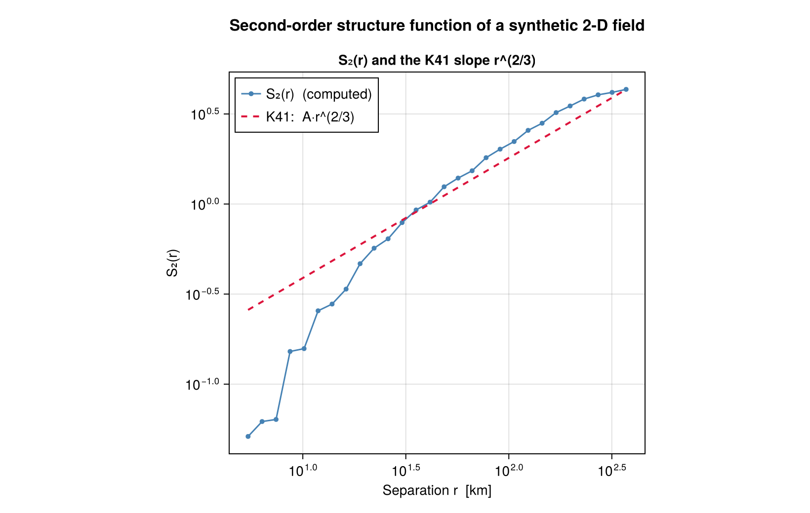

StructureFunctions.jl
StructureFunctions computes structure functions: averages over pairs of points of a polynomial in the increment δu = u(x + r) − u(x), binned in the separation |r|. It takes vector and scalar fields on point lists, batches of snapshots, structured grids and the sphere, and derives spectra, fluxes, covariances, fits and the third-order exact laws from the results.

What it computes
| Capability | Where |
|---|---|
| Second- and third-order, longitudinal, transverse, scalar, mixed and cross-field moments | Mathematical definitions |
| The six isotropic invariants and the Helmholtz split in one pass over the pairs | Calculations |
| Joint histograms in separation and operator value, or separation and angle | Calculations |
| Moment tensors of any order | Calculations |
| Batches of snapshots over shared or varying positions | Calculations |
| Exact routes: cell culling, the sorted line, grid lag sweeps and grid transforms | Calculations |
| Scattered points through a non-uniform FFT | Calculations |
| Pair weights, masks, multi-fields and the sphere | Data and geometry |
| Spectra, Helmholtz spectra, covariances, spectral fluxes and fits | Spectra, fluxes and fitting |
| The four-fifths, four-thirds and Yaglom laws | Exact laws |
| Serial, threaded, Distributed, MPI and GPU execution | Execution backends |
Installation
Julia 1.12 or later is required.
using Pkg
Pkg.add(url="https://github.com/jbphyswx/StructureFunctions.jl.git")Extensions load with the packages they need: threading with OhMyThreads, GPUs with KernelAbstractions and CUDA, grids with FlowGeometries, transforms with an AbstractFFTs provider such as FFTW, and the spectral kernels with Bessels.
Start with Getting started.